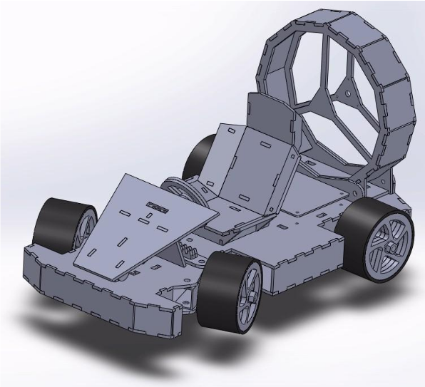
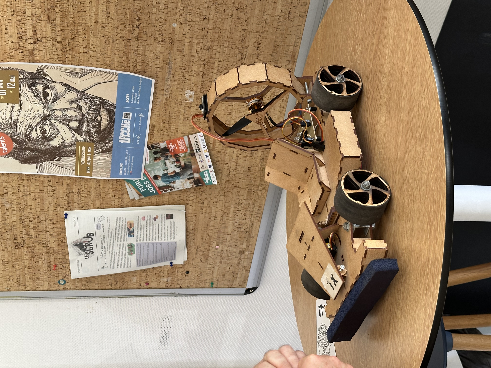
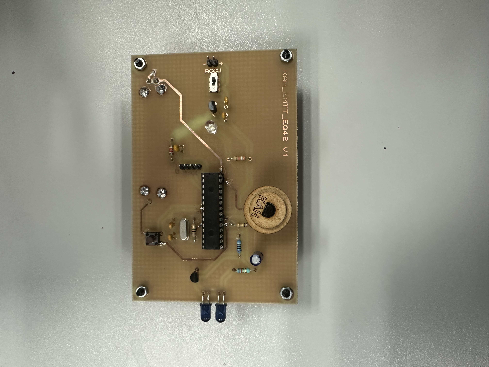
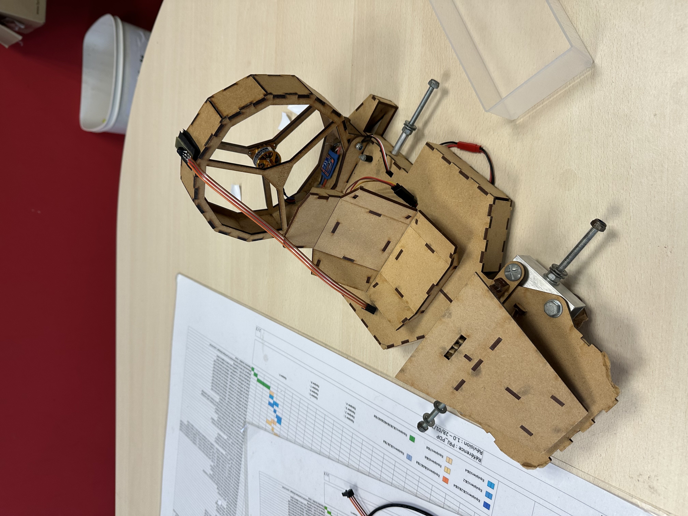
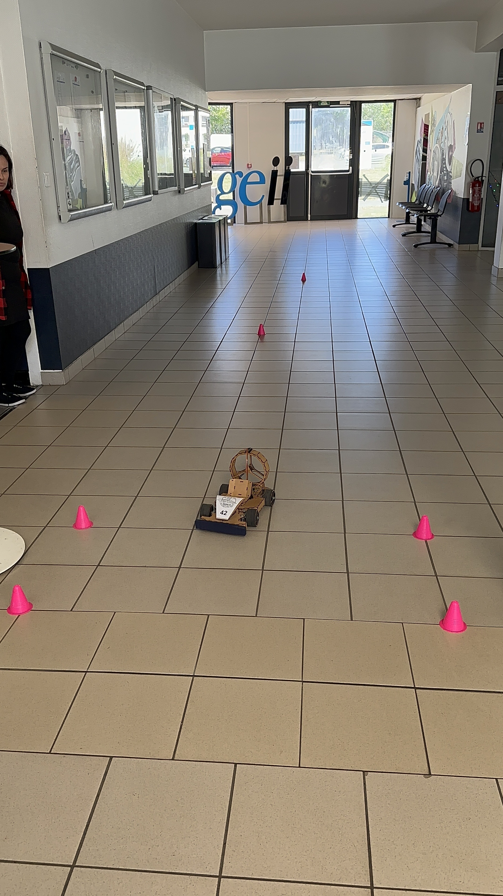
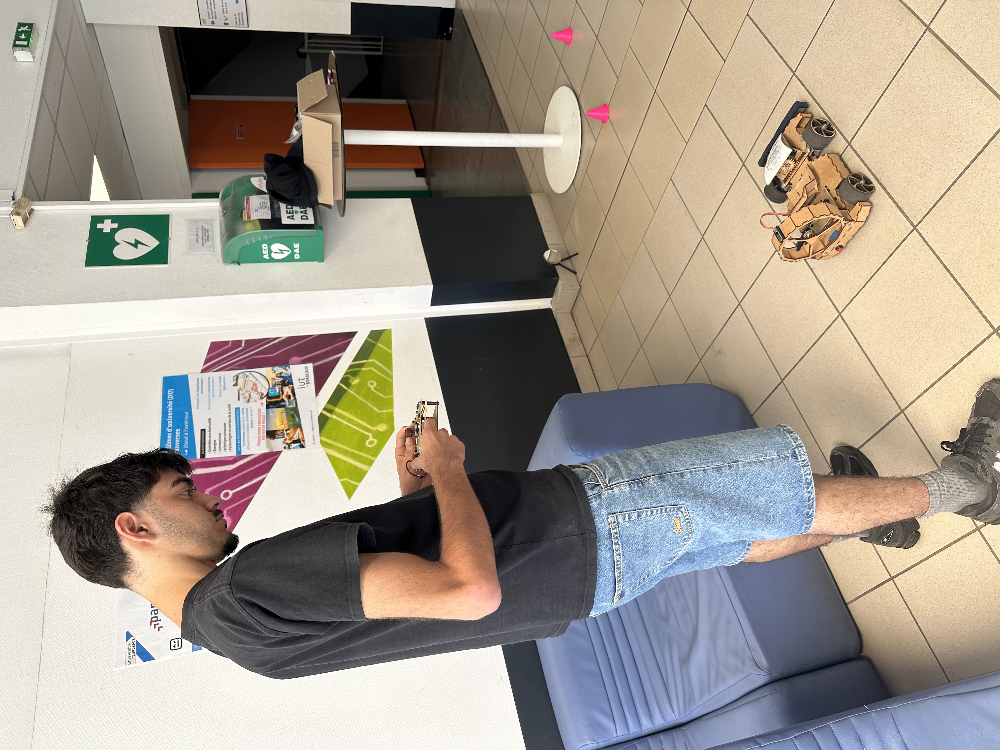
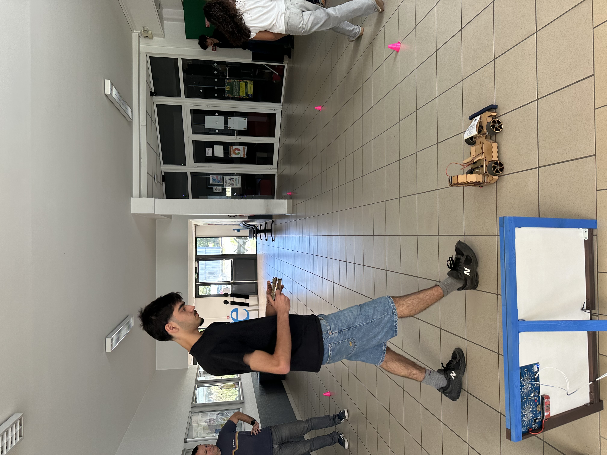
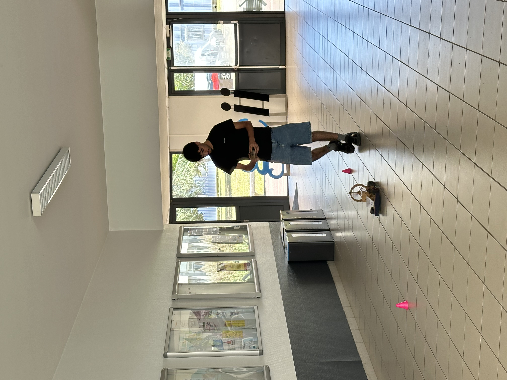

Projet 3 : Kart à Hélice

- Action : Infrarouges, Leds, Récepteur Infrarouge, Buzzer
- Traitement : ATMEG328P,
- Energie : Lipo 2S
- Acquisition : Bouton Poussoir
Présentation du produit
Depuis les années 70, le modélisme connaît un vrai succès auprès des particuliers. Si, au début, ce loisir était réservé aux passionnés qui étaient prêts à passer de nombreuses heures pour maîtriser la technicité et les subtilités de la construction de leurs engins miniatures, depuis le début des années 2000, le modélisme évolue, se simplifie, et devient maintenant accessible à tous.
Aujourd'hui, presque tous les moyens de locomotion grandeur nature ont été miniaturisés au moins une fois. L'entreprise Toy Corporation entreprend aujourd'hui de concevoir et de commercialiser en grande série un kart à hélice (version à hélice d'un kart). Toy Corporation opte stratégiquement de restreindre l'emploi du kart à une utilisation en intérieur (salon, véranda, salle de sport, gymnase...).
Ainsi, la mécanique et la motorisation sont d'une taille et d'une puissance modérées. La transmission de données est une liaison infrarouge standard. Ceci permet ainsi d'optimiser les coûts (de développement et de production) et de proposer un produit « grand public » à un prix raisonnable et compétitif. Les coûts étaient aussi à surveiller pour ne pas dépasser les 160 euros TTC.
Ma mission
En tant que coéquipier numéro 2, mon rôle s'est concentré sur la conception de la carte émetteur, qui sert de télécommande au kart. Lors de la phase du DDC, j'ai été chargé de développer l'intégralité des parties action et acquisition de cette télécommande. J'ai ensuite pris en charge sa fabrication physique, puis j'ai procédé aux phases de vérification de ces blocs d'action et d'acquisition directement sur la carte émetteur pour m'assurer que les ordres de pilotage étaient correctement traités et envoyés.
Mon ressenti
Un projet plus conséquent où la dimension du travail en équipe a pris tout son sens, constituant une excellente mise en situation pour mon parcours futur. Sur le plan technique, j'ai trouvé incroyable de pouvoir créer la télécommande de A à Z. Découvrir que l'infrarouge permet de concevoir de véritables petits objets "connectés" a été particulièrement stimulant. Même si ce n'est qu'une première approche, c'est un fonctionnement concret qui me donnera de solides bases pour une multitude d'autres projets à l'avenir.
Logiciels & Technologies utilisés
Documents livrables






